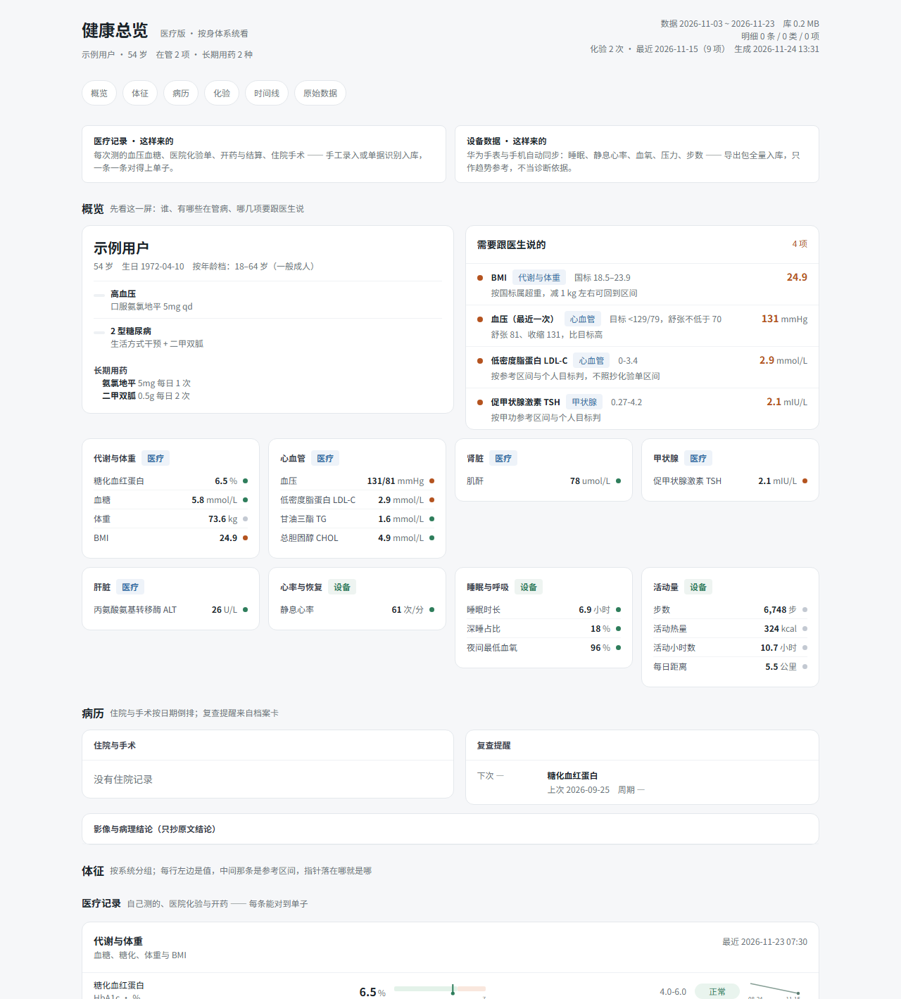
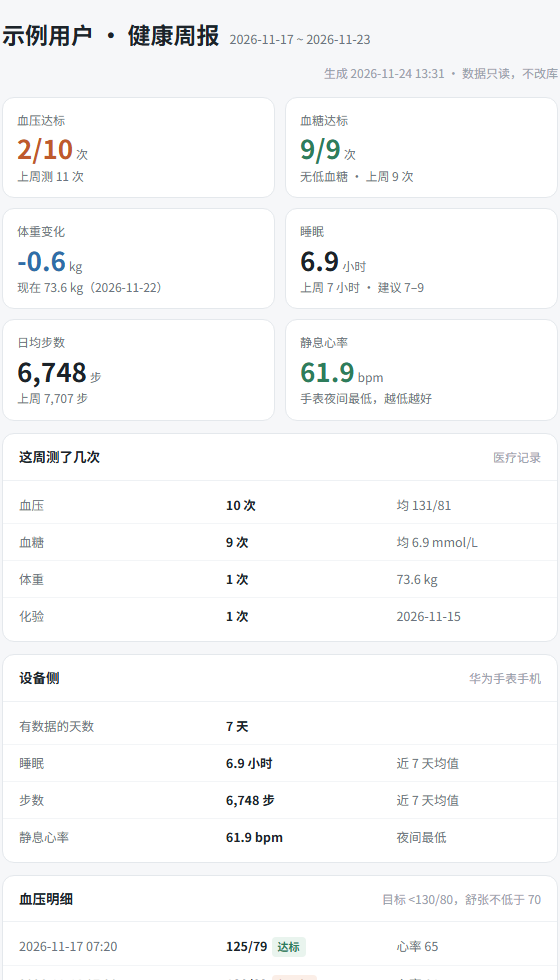

散在各处的数据，收成自己的一份；需要的时候，一页纸给医生看。
一个 .db 一个人，姓名只写进 meta；换人换库，代码同一套，不存在“混在一起”。
一句话、手机截图、化验单、处方/检查单。识别不出的字段留空或进「待确认」，不猜不编。
按参考区间与个人目标标出越界项，只说「需留意」；诊断与用药以主诊医生为准。
系统分组看板 + 一周周报，单文件 HTML，内嵌 CSS/SVG，无 CDN、无统计脚本。
FHIR R4 六类资源：Patient、Observation、Condition、MedicationStatement、DiagnosticReport、Encounter。
自带 SKILL.md 与四份 references，Claude Code、Codex 等支持技能的客户端装上就能用。
演示数据全部虚构，仓库里没有任何真人的病历。


只需要 Python 3.10+，不装数据库、不配服务。
# 拿到代码 git clone https://github.com/kele551/health-db-skill.git cd health-db-skill # ① 建自己的空库（25 张标准表） python tools/健康库.py init data/医疗与运动健康数据库.db "你的名字" # ② 写入指标字典（单位 / 参考区间 / LOINC） python tools/指标字典导入.py # ③ 出第一份看板 python tools/健康档案看板.py --out data/看板.html # 想看演示效果（虚构数据） python demo/make_demo.py
| 你手上是什么 | 一条命令 |
|---|---|
| 一句话 / 语音转写 | 健康文字录入.py --text "今天早上八点血压128/82，心率76" |
| 手机截图 | 健康截图入库.py --file "截图.png" --no-cloud |
| 化验单 / 检验单 | 化验单入库.py --file "化验单.png" |
| 处方 / 检查单 / 缴费单 | 单据识别.py --file "处方.png" |
| 新的一类指标 | 健康指标扩展.py add --category 血氧 --value 96 --unit % |
脚本不埋点、不上传、不请求第三方接口；要不要备份、备份到哪，全由你自己决定。
不做诊断、不给用药建议、不替你判断要不要停药；不把数据传到任何服务器；不把一个人的库混进另一个人的库。